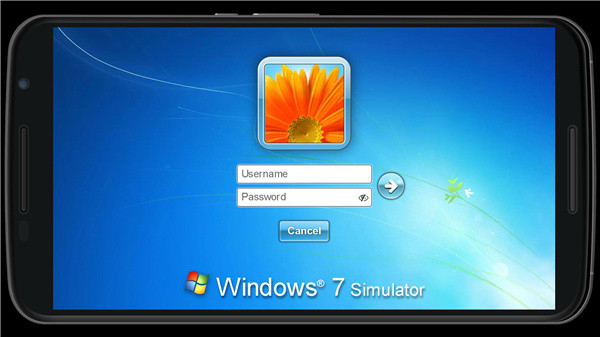

Win7 Simu 深度对比评测：把十年前的系统装进浏览器和手机，它做到了什么别人没做到的事
Win7 Simu 不是第一个 Windows 模拟器，但它同时做对了几件事——完整离线、双平台覆盖、主题生态、经典应用复刻。这篇对比评测从同类工具的格局出发，拆解它的差异化优势与取舍。
同类工具格局：它排在什么位置
Windows 模拟器这个类目里，大概分两种路线。一种是重量级方案——要么在虚拟机里跑完整 Win7 镜像，要么用开源模拟器如 ReactOS 逼近原生体验。这些方案的共同特点是：体积大、资源占用高、部署折腾，而且移动端基本没法用。另一种是轻量路线，用 Web 技术栈复刻经典系统界面——这一类里有不少做 XP 或 Win98 的，但大多是"演示性质"，功能凑个热闹就停更了。
Win7 Simu 官网站在轻量路线的顶端。它不是最接近原生 Win7 的方案，但它是唯一一个同时覆盖 Web 和 Android 双平台、做到完整离线可用、并且把经典应用复刻做到有深度的轻量模拟器。这三件事单独拿出来都不是首创，但三件事同时做对，目前还没有第二个。

差异化优势
完整离线——不是"缓存个壳"的那种离线
轻量 Web 应用说"支持离线"通常是打个折扣——能用界面，但数据加载卡壳、或者某些模块直接罢工。Win7 Simu 的离线是真离线：首次加载完成后，断网能跑 36 款模拟应用、切换 41 套预置主题、在 Theme Studio 里改主题、玩内置游戏、管理模拟文件系统。唯一需要联网的是天气、货币汇率这类依赖实时数据的小工具，以及账户同步和社区主题拉取。
Web 版通过 Service Worker + Cache API 实现，Android 版则从根本上把全部代码和资源打进 APK。两条技术路径殊途同归，最终给用户的体验是一致的：装完/加载完就再也不惦记网络了。这个细节看起来小，但对轻量模拟器来说，完整离线意味着你可以在飞机上、地铁里、或者给没有稳定网络的朋友演示——这些场景里其他 Web 模拟器直接变成白板。

双平台覆盖加 Theme Studio——一个模拟器等于两条路线
Web 版和 Android 版的分工很清晰。Web 版零安装，任何有浏览器的设备都能访问，给别人发个链接就能体验——Chromebook、iPad、Linux 桌面通吃。Android 版则补上了 Web 版因为浏览器沙箱做不到的事：系统通知推送到 Android 通知栏、根据设备姿态自动旋转界面、外接鼠标时有完整的右键和拖拽操作、能把 Android 已安装的应用接入模拟器的开始菜单。
两个版本共享同一个 Theme Studio 生态，41 套预置主题加上社区主题拉取。Theme Studio 本身也支持离线编辑，你改完主题可以本地保存，下次联网再发布到社区。这个设计让双平台不再是"两个独立模拟器"，而是一个生态的两个入口——Web 版适合日常快速访问和主题分享，Android 版适合把手机桌面改成 Win7 风格、或者需要系统级功能的时候。
经典应用复刻有深度，不是贴图糊弄
轻量模拟器复刻经典应用常见的问题是"看起来像、用起来不行"——界面贴图上去了，交互逻辑是凑的，功能点要么缺失要么跑不通。Win7 Simu 在这件事上做得比同类认真得多。举个例子，Windows Media Center 这款微软在 Win8 就砍掉的一体化媒体中心，很多人怀念但没地方用——Win7 Simu 完整复刻了它的全屏大图标界面、图片全屏浏览和幻灯片模式、音乐播放、电影电视板块、甚至把游戏入口也接进来了。它不是把 Media Center 的截图贴上去做个跳转按钮，而是真的实现了各板块的交互。命令提示符覆盖了常用命令子集，具体支持哪些命令可以翻一下win7simu文档，扫雷和纸牌是能正经玩的，画图和记事本也不是摆设。
它付出了什么代价
优势从来不是免费的。Win7 Simu 为了做到上面这些，有几个明确的取舍。
真实 .exe 跑不了——这点官方也不回避。轻量模拟器的技术基础决定了它只能复刻界面和交互逻辑，没法翻译 x86 指令集。如果你需要跑真实的 Win7 软件，还是得回到虚拟机或者 ReactOS 那套重量级方案。Win7 Simu 的定位从一开始就是"体验经典 Windows 的感觉"，而不是"替代真实 Win7 环境"。
Web 版受浏览器沙箱限制——File Explorer 不能直接读写设备本地存储，A 盘功能只有 Android 版有，系统通知推送 Web 版基本指望不上，鼠标右键有冲突需要用 Alt 修饰键绕过。这些不是开发偷懒，是浏览器安全设计决定的天花板。官方给出的替代方案是"双平台组合"——Web 版日常用，Android 版补功能。
Android 版需要装 APK——虽然从官方下载的安装包不大，但"安装"这个动作本身就比 Web 版多了一道门槛。而且 Android 版的某些系统级功能（比如显示器方向控制）依赖原生权限，部分国产 ROM 可能会有兼容性问题。
选购结论
什么样的人该选 Win7 Simu？三类。第一类是怀念 Win7 但不想装虚拟机的老用户——它能让你在浏览器里重新摸到开始菜单、任务栏、Media Center 那种熟悉的感觉，不用折腾 ISO 镜像和分配资源。第二类是给没有 Android 设备的朋友演示的——发个链接就能体验，对方不需要装任何东西。第三类是主题爱好者——Theme Studio 加上双平台分享，这是目前轻量模拟器里最完整的主题生态。
什么样的人该选别的？如果你需要跑真实的 Win7 软件，直接上虚拟机或 ReactOS；如果你只想要个 XP 或 Win98 的界面截图当桌面，找个更轻的玩具就够了；如果你是做教学演示需要可控的系统环境，重量级方案更靠谱。
最后给一句明确的推荐：如果你想找一个能真正用起来而不是看一眼就关的轻量 Windows 模拟器，Win7 Simu 是目前唯一值得认真对待的选择——从零安装的 Web 版到功能完整的 Android 版，从完整离线到主题生态，它把同类工具要么做一半要么干脆不做的事，全部做到了可用的程度。
这套模拟器的资料我在三个仓库都同步维护了——GitHub 作为主仓，国内用户访问慢的话可以直接去 Gitee 或 GitCode 拿同样的内容。